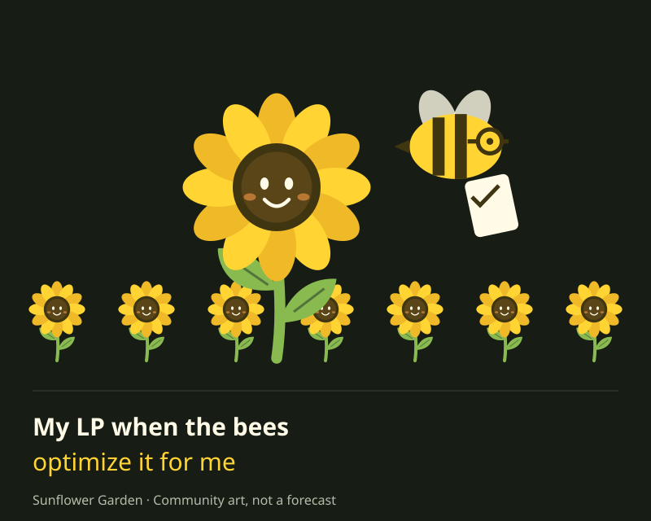
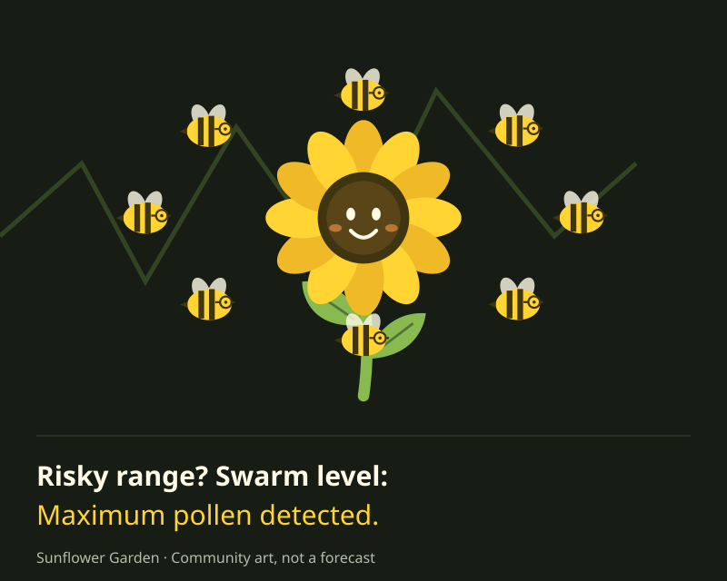
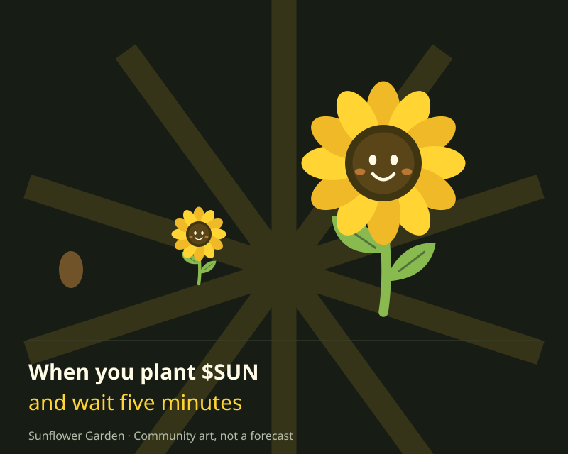
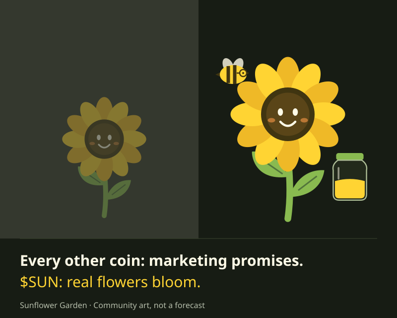
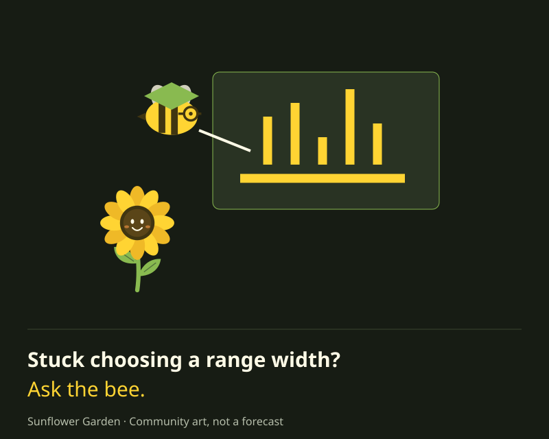
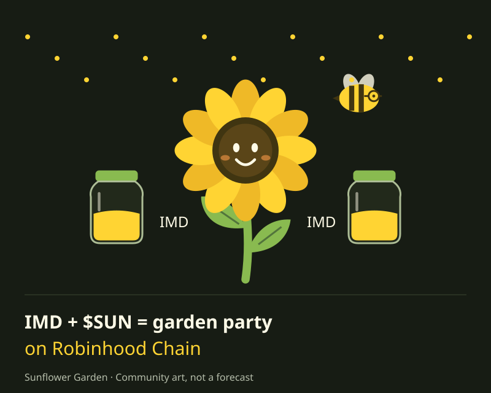

Download PNG : My LP when the bees optimize it for meWelcome to Your Sunflower Garden
Sunflower Garden is a concentrated liquidity toolkit for the IMD ecosystem on Robinhood Chain. Explore ranges today; wallet monitoring and governance are planned.
Your garden. Your decisions.
Why a garden?
Tending your LP is now as easy as planting a seed, letting bees do the optimizing, and basking in databases instead of dirt.
That’s the vision. This release is an educational range calculator. It doesn’t monitor positions, optimize funds, execute swaps or provide governance.
See Your Plot Grow
$SUN / IMD · Range sandboxA little room to bloom.
A balanced range allows more price movement than a narrow one. Your position can still move out of range.
Narrow · busier beesWide · more room
Balanced range0.70–1.30×
Try the slider. Flowers and honey show range width, never earnings.
Drag to expand or compress your liquidity range. Sunflowers sprout, bees get busier or calmer. It’s hands-on, visual, and transparent, with no hidden weeds in your garden.
Illustrative prices are relative to 1×. No wallet data is used. This is a learning tool, not a trade recommendation.
Concentrated liquidity range±30%
Drag either handle, or use the slider above. Illustrative chart.$SUN in the wildWaiting for launch data
- Price (USD)
- Market cap (USD)
- 24h volume (USD)
Meet the Bees:
Rules-Based, Not Bossy
Our bees are deterministic algorithms: they can only follow rules, never take discretion.
Here, they explain your selected range. They do not predict volatility or optimize a real position. Select a bee to explore the tradeoffs.
Balanced range. A wider price window than the narrow tier. Still exposed to price movement and divergence loss.
What happens when a position goes out of range?
Concentrated liquidity is active only inside its selected price range. Outside that range, the position becomes entirely one token and stops earning trading fees until the price returns. Divergence loss (often called impermanent loss) means an LP position can be worth less than simply holding the same tokens. Fees may not offset that loss. The illustration does not estimate either.
Monitor Your Garden
A view across 5 wallets.
Every seed in its own plot.
The planned dashboard brings LP positions, balances and holdings into one view. No custody, no rebalancing on your behalf, and no fee distribution.
Explore the toolkit roadmapDepositsPositionsBalances
Concept illustration. Wallet tracking is planned; this site never collects addresses or connects to a wallet.
Tokenomics
Sunlight for the System
$SUN is the community’s token for the Sunflower Garden ecosystem. Utility and parameter voting are the vision; this launch deploys the fixed-supply token only.
90% pool10% swarm
- Fixed supply
- 1,000,000,000 SUN
- Creator tax on buys
- 0.5%
- Pool fee · Uniswap v4
- 1.25%
- Sell & wallet transfer tax
- 0%
All tokens are minted once to the launch factory. It sends 90% to the pool and 10% through the external swarm distributor. There is no later minting, owner or admin.
The creator tax applies to every transfer out of PoolManager, including liquidity withdrawals. Transfers into PoolManager are exempt. No treasury tax is implemented. Pool fees are separate. No yield, no passive rewards, no fee claims.
How to Plant
($SUN) Seeds
Start with the details. Then make your own decisions. Any swap happens on the external coin page, with your wallet and your signature.
Your keys stay with you.
Use a wallet that supports Robinhood Chain. Confirm the network is Robinhood Chain before signing. This website never asks for a recovery phrase or a wallet connection.
A little fuel for planting.
Have IMD for the $SUN / IMD pair and ETH for network gas. Confirm token addresses below and review the external coin page’s funding instructions. Network and swap fees are separate.
Read. Review. Then sign.
Use the live coin page to review the $SUN / IMD swap. Check the token, price impact, minimum received and gas. Buys receive 0.5% less SUN due to the creator tax, in addition to the pool fee.
Transactions and risk acknowledgment happen on the DEX. This calculator cannot add liquidity or auto-swap a deposit.
Buy $SUNThe Buy link appears when launch data provides the coin page.
Transparency:
Always in Bloom
All available token and contract addresses are visible. Copy the full value and verify it before using an external interface.
No independent audit or deployed verification is claimed. The SUN address appears only after launch data supplies it.
$SUNSunflower Garden · 18 decimals
launching…IMDPaired currency · 18 decimals
0x5f7bb59365ce557c26dbcaa4ee9d39a4b95b7127PoolManagerUniswap v4 · Robinhood Chain
0x8366a39cc670b4001a1121b8f6a443a643e40951Creator walletFixed 0.5% recipient
0xEeaF04a41aC45A605E30dc6a41A44E6F75Ddf8b6A garden takes tending.
Grow your liquidity. Let bees do the math.
Our direction is simple: clearer tools, informed choices, and a community with a say.
- Phase 1 · In development
The LP toolkit
$SUN / IMD range exploration, a token, and a dashboard. Today, explore the calculator. Wallet monitoring, single-sided deposit routing and voting are planned.
- Phase 2 · Proposed
More IMD pairs
Bring the same range-setting ideas to additional IMD pairs, subject to integration work and community decisions.
- Phase 3 · Proposed
A richer garden
Advanced range suggestions and anomaly flags. No timelock, oracle, fee router or governance contract is deployed by this launch.
Fresh from the swarm.
A little pollen for your timeline. Take a piece of the garden with you.
Follow @sunflowerswarm

Download PNG : Risky range? Swarm level: Maximum pollen detected.

Download PNG : When you plant $SUN and wait five minutes

Download PNG : Every other coin: marketing promises. $SUN: real flowers bloom.

Download PNG : Stuck choosing a range width? Ask the bee.

Download PNG : IMD + $SUN = garden party on Robinhood Chain